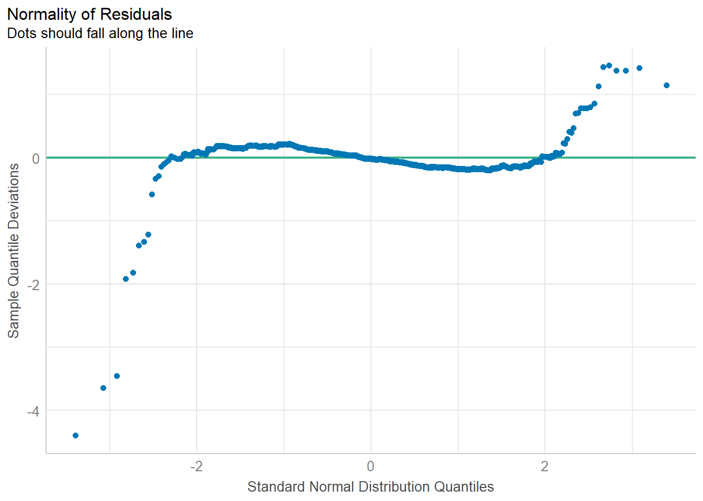
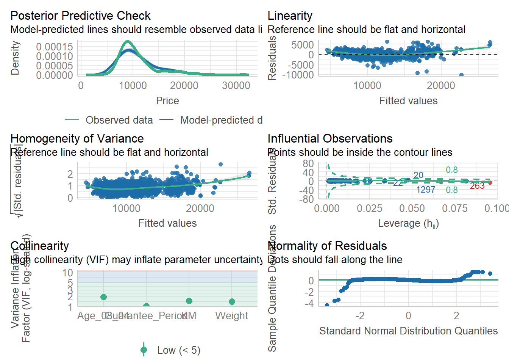
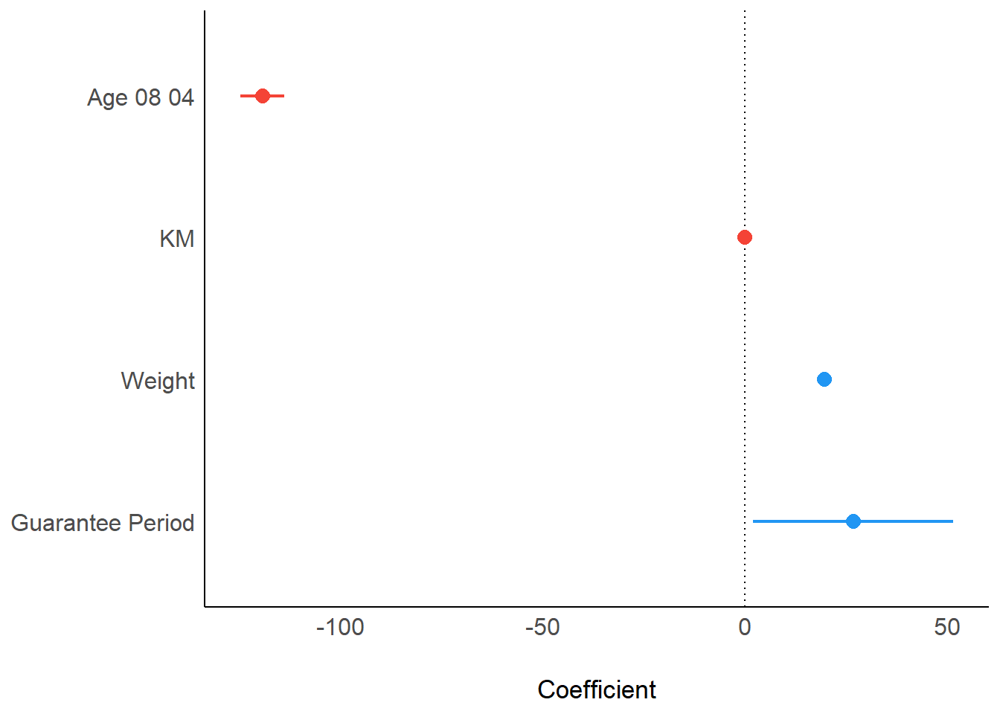

pacman::p_load(ggstatsplot, tidyverse)Hands-on Exercise 4 - Visual Statistical Analysis
Learning Objectives:
- Create visual graphics with rich statistical information using ggstatsplot package
- Use performance package to visualise model diagnostics
- Use parameters package to visualise model parameters
Getting Started
ggstatsplot is an extension of ggplot2 package for creating graphics with details from statistical tests included in the information-rich plots themselves.
To provide alternative statistical inference methods by default
To follow besst practices for statistical reporting
For all statistical tests resulted in the plots, the default template abides by the APA gold standard for statistical reporting
Installing and loading the required libraries
The following R packages will be used:
ggstatsplotis an extension of ggplot2 package for creating graphics with details from statstical tests included in the plots themselces
tidyverse, a family of modern R packages specially designed to support data science, analysis and communication task including creating static statistical graphs.
Code chunk below will be used to check if these packages have been installed and also will load them into the working R environment.
Importing the Data
The code chunk below imports exam_data.csv into R environment by using read_csv() function of readr package.
readr is a pacakge within tidyverse.
exam <- read_csv("data/Exam_data.csv")exam_data tibble data frame contains:
Year end examination grades of a cohort of primary 3 students from a local school.
There are a total of seven attributes. Four of them are categorical data type and the other three are in continuous data type.
The categorical attributes are: ID, CLASS, GENDER and RACE.
The continuous attributes are: MATHS, ENGLISH and SCIENCE.
One-sample test: gghistostats() method
In the code chunk below, gghistostats() is used to to build an visual of one-sample test on English scores.

set.seed(1234) # for reproducibility
gghistostats(
data = exam,
x = ENGLISH,
type = "bayes",
test.value = 60,
xlab = "English scores"
)Default information: - statistical details - Bayes Factor - sample sizes - distribution summary
Unpacking the Bayes Factor
A Bayes factor is the ratio of the likelihood of one particular hypothesis to the likelihood of another. i.e., a measure of the strength of evidence in favor of one theory among two competing theories.
Bayes factor allows evaluation of the data in favor of a null hypothesis, and to use external information to do so. It gives the weight of the evidence in favor of a given hypothesis.
When comparing two hypotheses, H1 (the alternate hypothesis) and H0 (the null hypothesis), the Bayes Factor is often written as B10, defined mathematically as:
\(\frac{likelihood of data given H_{1}}{likelihood of data given H_{0}} = \frac{P(D|H_{1})}{P(D|H_{0})}\)
The Schwarz criterion is one of the easiest ways to calculate rough approximation of the Bayes Factor.
Interpreting Bayes Factor
A Bayes Factor can be any positive number. A common interpretation was first proposed by Harold Jeffereys (1961) and slightly modified by Lee and Wagenmakers in 2013:
| B10 Value | Conclusion |
|---|---|
| >100 | Extreme evidence for H1 |
| 30-100 | Very strong evidence for H1 |
| 10-30 | Strong evidence for H1 |
| 3-10 | Moderate evidence for H1 |
| 1-3 | Anecdotal evidence for H1 |
| 1 | No evidence |
| 1/3-1 | Anecdotal evidence for H1 |
| 1/3-1/10 | Moderate evidence for H1 |
| 1/10-1/30 | Strong evidence for H1 |
| 1/30-1/100 | Very strong evidence for H1 |
| <1/100 | Extreme evidence for H1 |
Two-sample mean test: ggbetweenstats()
In the code chunk below, ggbetweenstats() is used to build a visual for two-sample mean test of Maths scores by gender.

ggbetweenstats(
data = exam,
x = GENDER,
y = MATHS,
type = "np",
messages = FALSE
)Default information: - statistical details - Bayes Factor - sample sizes - distribution summary
Oneway ANOVA Test: ggbetweenstats() method
In the code chunk below, ggbetweenstats() is used to build a visual for One-way ANOVA test on English score by race.

ggbetweenstats(
data = exam,
x = RACE,
y = ENGLISH,
type = "p",
mean.ci = TRUE,
pairwise.comparisons = TRUE,
pairwise.display = "s",
p.adjust.method = "fdr",
messages = FALSE
)“ns” → only non-significant
“s” → only significant
“all” → everything
ggbetweenstats - Summary of tests
Following (between-subjects) tests are carried out for each type of analyses:
| Type | No. of groups | Test |
|---|---|---|
| Parametric | >2 | Fisher’s or Welch’s one-way ANOVA |
| Non-parametric | >2 | Kruskal-Wallis one-way ANOVA |
| Robust | >2 | Heteroscedastic one-way ANOVA for trimmed means |
| Bayes Factor | >2 | Fisher’s ANOVA |
| Parametric | 2 | Student’s or Welch’s t-test |
| Non-parametric | 2 | Mann-Whitney U test |
| Robust | 2 | Yuen’s test for trimmed means |
| Bayes Factor | 2 | Student’s t-test |
Following effect sizes (and confidence intervals) are available for each type of test:
| Type | No. of Groups | Effect Size | Confidence Intervals |
|---|---|---|---|
| Parametric | >2 | \({\eta^2}_{p},\eta^2,{\omega^2}_{p},\omega^2\) | Yes |
| Non-parametric | >2 | \({\eta^2}_{H}\) (H-statistic based eta-squared) | Yes |
| Robust | >2 | \(\xi\) (Explanatory measure of effect size) | Yes |
| Bayes Factor | >2 | No | No |
| Parametric | 2 | Cohen’s d, Hedge’s g (central-and-noncentral-t distribution based) | Yes |
| Non-parametric | 2 | r (computed as \(Z/\sqrt{N}\)) | Yes |
| Robust | 2 | \(\xi\) (Explanatory measure of effect size) | Yes |
| Bayes Factor | 2 | No | No |
Summary of pairwise comparison tests supported in ggbetweenstats
| Type | Equal Variance | Test | p-value Adjustment? |
|---|---|---|---|
| Parametric | No | Games Howell Test | Yes |
| Parametric | Yes | Student’s t Test | Yes |
| Non-Parametric | No | Dunn Test | Yes |
| Robust | No | Yuen’s Trimmed Means Test | Yes |
| Bayes Factor | NA | Student’s t Test | NA |
Significant Test of Correlation: ggscatterstats()
In the code chunk below, ggscatterstats() is used to build a visual for Significant Test of Correlation between Maths scores and English scores.

ggscatterstats(
data = exam,
x = MATHS,
y = ENGLISH,
marginal = FALSE,
)Significant Test of Association (Depedence) : ggbarstats() methods
In the code chunk below, the Maths scores is binned into a 4-class variable by using cut(). ggbarstats() is used to build a visual for Significant Test of Association

exam1 <- exam %>%
mutate(MATHS_bins =
cut(MATHS,
breaks = c(0,60,75,85,100))
)
ggbarstats(exam1,
x = MATHS_bins,
y = GENDER) Visualising Models
Visualise model diagnostic and model parameters by using parameters package.
- Toyota Corolla case study will be used. The purpose of study is to build a model to discover factors affecting prices of used-cars by taking into consideration a set of explanatory variables.
Installing and loading the required libraries
pacman::p_load(readxl, performance, parameters, see)Importing Excel file: readxl methods
In the code chunk below, read_xls() of readxl package is used to import the data worksheet of ToyotaCorolla.xls workbook into R.
car_resale <- read_xls("data/ToyotaCorolla.xls",
"data")
car_resale# A tibble: 1,436 × 38
Id Model Price Age_08_04 Mfg_Month Mfg_Year KM Quarterly_Tax Weight
<dbl> <chr> <dbl> <dbl> <dbl> <dbl> <dbl> <dbl> <dbl>
1 81 TOYOTA … 18950 25 8 2002 20019 100 1180
2 1 TOYOTA … 13500 23 10 2002 46986 210 1165
3 2 TOYOTA … 13750 23 10 2002 72937 210 1165
4 3 TOYOTA… 13950 24 9 2002 41711 210 1165
5 4 TOYOTA … 14950 26 7 2002 48000 210 1165
6 5 TOYOTA … 13750 30 3 2002 38500 210 1170
7 6 TOYOTA … 12950 32 1 2002 61000 210 1170
8 7 TOYOTA… 16900 27 6 2002 94612 210 1245
9 8 TOYOTA … 18600 30 3 2002 75889 210 1245
10 44 TOYOTA … 16950 27 6 2002 110404 234 1255
# ℹ 1,426 more rows
# ℹ 29 more variables: Guarantee_Period <dbl>, HP_Bin <chr>, CC_bin <chr>,
# Doors <dbl>, Gears <dbl>, Cylinders <dbl>, Fuel_Type <chr>, Color <chr>,
# Met_Color <dbl>, Automatic <dbl>, Mfr_Guarantee <dbl>,
# BOVAG_Guarantee <dbl>, ABS <dbl>, Airbag_1 <dbl>, Airbag_2 <dbl>,
# Airco <dbl>, Automatic_airco <dbl>, Boardcomputer <dbl>, CD_Player <dbl>,
# Central_Lock <dbl>, Powered_Windows <dbl>, Power_Steering <dbl>, …Multiple Regression Model using lm()
The code chunk below is used to calibrate a multiple linear regression model by using lm() of Base Stats of R.
model <- lm(Price ~ Age_08_04 + Mfg_Year + KM +
Weight + Guarantee_Period, data = car_resale)
model
Call:
lm(formula = Price ~ Age_08_04 + Mfg_Year + KM + Weight + Guarantee_Period,
data = car_resale)
Coefficients:
(Intercept) Age_08_04 Mfg_Year KM
-2.637e+06 -1.409e+01 1.315e+03 -2.323e-02
Weight Guarantee_Period
1.903e+01 2.770e+01 Model Diagnostic: checking for multicolinearity:
In the code chunk, check_collinearity() of performance package.
check_collinearity(model)# Check for Multicollinearity
Low Correlation
Term VIF VIF 95% CI Increased SE Tolerance Tolerance 95% CI
KM 1.46 [ 1.37, 1.57] 1.21 0.68 [0.64, 0.73]
Weight 1.41 [ 1.32, 1.51] 1.19 0.71 [0.66, 0.76]
Guarantee_Period 1.04 [ 1.01, 1.17] 1.02 0.97 [0.86, 0.99]
High Correlation
Term VIF VIF 95% CI Increased SE Tolerance Tolerance 95% CI
Age_08_04 31.07 [28.08, 34.38] 5.57 0.03 [0.03, 0.04]
Mfg_Year 31.16 [28.16, 34.48] 5.58 0.03 [0.03, 0.04]check_c <- check_collinearity(model)
plot(check_c)
Model Diagnostic: checking normality assumption
In the code chunk, check_normality() of performance package.

model1 <- lm(Price ~ Age_08_04 + KM +
Weight + Guarantee_Period, data = car_resale)
check_n <- check_normality(model1)
plot(check_n)Model Diagnostic: Check model for homogeneity of variances
In the code chunk, check_heteroscedasticity() of performance package.

check_h <- check_heteroscedasticity(model1)
plot(check_h)Model Diagnostic: Complete check
We can also perform the complete by using check_model().

check_model(model1)Visualising Regression Parameters: see methods
In the code below, plot() of see package and parameters() of parameters package is used to visualise the parameters of a regression model.

plot(parameters(model1))Visualising Regression Parameters: ggcoefstats() methods
In the code below, ggcoefstats() of ggstatsplot package to visualise the parameters of a regression model.

ggcoefstats(model1,
output = "plot")